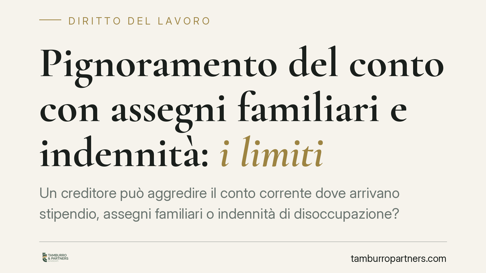

Pignoramento del conto con assegni familiari e indennità: i limiti
Un creditore può aggredire il conto corrente dove arrivano stipendio, assegni familiari o indennità di disoccupazione? La legge pone limiti precisi a tutela del minimo vitale, distinguendo tra somme non ancora accreditate e somme già confluite in banca. Comprendere queste soglie è decisivo per chi ha debiti e teme il blocco del conto.

Il quadro normativo di riferimento
La pignorabilità delle somme legate al lavoro e all'assistenza è disciplinata dall'art. 545 del codice di procedura civile. La regola generale, contenuta nel quarto comma, fissa il tetto ordinario: stipendi, salari e altre indennità relative al rapporto di lavoro possono essere pignorati da un creditore comune (per crediti diversi da quelli alimentari e tributari) nella misura massima di un quinto.
Accanto a questa regola operano discipline speciali per i crediti tributari, per i crediti alimentari e per le somme una volta transitate sul conto corrente. Ogni ipotesi ha soglie proprie: è un errore ragionare come se esistesse un unico limite valido per tutti i creditori.
Assegni familiari e indennità: quali tutele
Le indennità di disoccupazione (come la NASpI) e le somme erogate a titolo assistenziale godono di una protezione rafforzata. La logica è quella del minimo vitale: preservare le risorse indispensabili al sostentamento del debitore e della sua famiglia.
Gli assegni al nucleo familiare hanno natura assistenziale. Questo non si traduce, però, in un'impignorabilità assoluta e automatica: la loro tutela va valutata in concreto, alla luce del regime dell'art. 545 c.p.c. e dell'esame caso per caso operato dai giudici di merito. È quindi opportuno documentarne l'origine, senza dare per scontato che siano intangibili in ogni situazione.
Le somme già accreditate sul conto corrente
Un passaggio spesso frainteso riguarda il momento in cui lo stipendio o l'indennità arrivano in banca. Qui interviene l'ottavo comma dell'art. 545 c.p.c., introdotto dal d.l. n. 83/2015 (convertito in legge n. 132/2015).
La disciplina distingue due scenari:
- Somme accreditate prima del pignoramento: sono impignorabili per la parte pari al triplo dell'assegno sociale. L'eccedenza può essere aggredita.
- Somme accreditate dopo il pignoramento: si applicano i limiti ordinari (di regola, il quinto).
In pratica, se sul conto è già presente un accredito di stipendio, il creditore non può toccare la quota corrispondente al triplo dell'assegno sociale, che rappresenta la soglia protetta di sostentamento.
Il problema del conto "misto"
Spesso sul conto confluiscono somme di diversa origine: stipendio, indennità, ma anche bonifici o versamenti di altra natura. In questi casi la tutela non opera in modo automatico su tutto il saldo.
Grava sul debitore l'onere di dimostrare l'origine delle somme, per attivare la protezione riservata alle voci impignorabili o parzialmente pignorabili. Estratti conto, cedolini e provvedimenti dell'ente erogatore diventano prova essenziale. Chi non documenta rischia che l'intero saldo venga trattato come pignorabile.
Il concorso di più creditori
Quando concorrono cause diverse — crediti tributari, alimentari e ordinari — il quinto comma dell'art. 545 c.p.c. detta un limite complessivo. Per i crediti alimentari la quota pignorabile è determinata dal giudice e può anche superare il quinto ordinario; in caso di simultaneo concorso con le altre cause, il pignoramento non può comunque eccedere, nel complesso, la metà delle somme.
Si tratta di una valutazione affidata al giudice dell'esecuzione, che pondera le diverse pretese. Non esiste una formula aritmetica rigida: la quota alimentare e il tetto complessivo vanno ricostruiti sul caso concreto.
Il pignoramento dell'Agente della Riscossione
Per i crediti tributari affidati all'Agenzia delle Entrate-Riscossione vale una disciplina autonoma, l'art. 72-ter del d.p.r. n. 602/1973, che prevede scaglioni ridotti rispetto ai creditori comuni: un decimo per stipendi fino a 2.500 euro, un settimo tra 2.500 e 5.000 euro, un quinto oltre i 5.000 euro. Sono percentuali più favorevoli al debitore rispetto al quinto secco.
Cosa fare in concreto
- Verifica l'origine di ogni accredito: conserva cedolini, provvedimenti INPS ed estratti conto per distinguere le somme tutelate.
- Controlla la data del pignoramento rispetto agli accrediti: la protezione del triplo dell'assegno sociale opera sulle somme già presenti sul conto.
- Non lasciare il conto "misto": valuta di separare le entrate protette da altri versamenti, per agevolare la prova della loro natura.
- Presenta tempestivamente le contestazioni al giudice dell'esecuzione se il pignoramento colpisce quote impignorabili.
- Fatti assistere prima del blocco: intervenire dopo l'ordinanza è più difficile che prevenire con una gestione documentata.
Di fronte a un pignoramento in corso o annunciato, consigliamo di ricostruire subito la composizione del saldo e le date degli accrediti, per far valere correttamente le soglie di legge.
---
Contributo informativo a cura di Tamburro & Partners Avvocati - Avv. Giuseppe Tamburro. Non costituisce parere legale.
Ogni storia di lavoro ha i suoi tempi.
Se gestisci HR e vuoi un confronto su contenzioso, ispezioni o licenziamenti, scrivi allo studio. Ti rispondiamo entro un giorno lavorativo.